SVS'" />SVS Morocco 2026 — Smart Vision Summit Marrakech Platform
A full-stack event management platform for Smart Vision Summit Morocco 2026 — a landmark two-day AI & fintech summit at Pickalbatros Hotel Du Golf in Marrakech. The first SVS edition on the African continent, bringing together financial leaders, AI innovators, and industry figures from Europe, the Gulf, and Africa. Built on Laravel & PHP, covering the public summit website, attendee registration, sponsorship packages, QR ticketing, real-time door scanning, and admin dashboard.

Project Overview
SVS Morocco 2026 (Smart Vision Summit Morocco) is a landmark two-day summit on 30–31 October 2026 at the Pickalbatros Hotel Du Golf in Marrakech — marking Smart Vision Group's first official event in Morocco and in Francophone North Africa. This is the 7th country in the global SVS series, a strategic milestone in the summit's expansion from the Gulf and Levant into Africa.
The summit places Artificial Intelligence at the heart of finance, business, and capital markets — highlighting AI's transformative role in trading, investment, financial services, and strategic decision-making. It brings together financial leaders, AI and fintech innovators, traders, brokerages, affiliates, institutional investors, and decision-makers from Europe, the Gulf, and Africa, positioning SVS Morocco as a powerful bridge between MENA, Europe, and the African continent.
The platform follows the proven SVS architecture established across Kuwait and other editions — adapted for the Moroccan and Francophone African market. It delivers a full public summit website with SEO for Morocco & North Africa, online attendee registration with QR ticketing, five-tier sponsorship packages with a Become a Sponsor application, and a comprehensive admin dashboard.
System Components
The public summit website showcases all event details — Pickalbatros Hotel Du Golf venue, summit overview, 30–31 October 2026 dates, past event gallery, promotional video section, sponsorship packages, contact, and a live countdown with a persistent sticky bar featuring WhatsApp, Register Now, and Become Sponsor CTAs.
Attendees register online via the 'Register Now' flow — fill in details, choose their package, and automatically receive a branded confirmation email with their unique QR ticket as a PDF. Full registration tracking and status management in the admin dashboard.
The Smart Vision team manages the entire summit from the admin dashboard — manage registrations, review and approve sponsor applications, issue QR tickets manually, monitor event-day entry scans in real time, and generate comprehensive attendee and sponsor reports.
Every registered attendee receives a unique branded QR ticket as a PDF email. On summit day at the Pickalbatros Hotel, door staff validate tickets in real time — green valid, red invalid or already scanned — preventing duplicate entry and logging every scan with a timestamp.
Five sponsor tiers are publicly showcased — each with detailed benefits including magazine ad designs, VIP permits, panel discussions, seminar & speaker slots, roll-up/flag spaces, venue branding, ADV on website & with media partners, press interviews, and email campaign inclusions. Companies apply via the 'Become a Sponsor' CTA, feeding into the admin dashboard for Smart Vision's review.
5-Tier Sponsorship Packages
SVS Morocco offers five sponsor tiers, each with a distinct level of visibility and benefits — from the top-tier Official Sponsor with full branding dominance, down to the Elite Sponsor package for targeted visibility.
Key Features
Outcomes
Technical Challenges
While SVS Morocco uses the same proven platform architecture as SVS Kuwait, adapting it for Morocco introduces distinct challenges: the target audience includes both Arabic-speaking and French-speaking (Francophone) users across North Africa and Europe, the SEO keyword landscape differs from the Gulf, and the event brand needs to establish credibility from scratch in a market where SVS has never operated. The platform's content, SEO, and sponsor messaging were all adapted for Morocco and Francophone North Africa.
SVS Morocco explicitly targets participants from three distinct regions — Europe, the Gulf, and Africa — each with different expectations and information needs when evaluating an event. The platform had to serve all three audiences simultaneously, communicating the summit's value to a Moroccan entrepreneur, a Dubai-based brokerage, and a European fintech investor equally effectively through design, copy, and SEO.
Attracting sponsors to a first-edition SVS in Morocco requires overcoming a credibility challenge — potential Moroccan and North African sponsors have no local reference point for the SVS brand. The platform's sponsorship hub addresses this with detailed package pages, a Past Event Gallery showcasing the scale of previous SVS editions, and a streamlined Become a Sponsor application flow that lowers the friction of the initial inquiry.